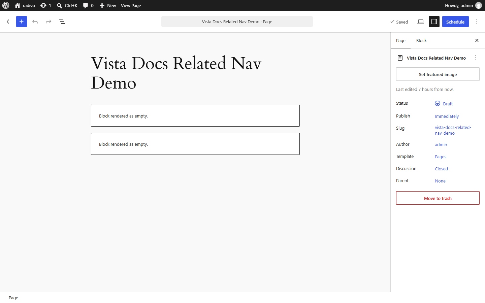

Related & Navigation
Use these blocks on single project templates or inside project content.

- Related Projects (
vista-portfolio/related-projects) — related project cards. - Project Navigation (
vista-portfolio/project-navigation) — previous / next project links.